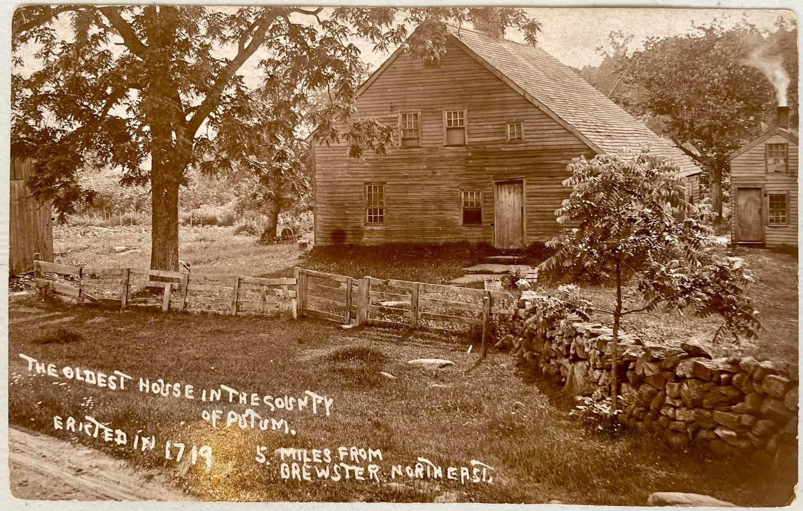
The Gage House
Built c. 1719 — likely the oldest house in Putnam County.
I. The House and Its Significance
The Gage House at 483 Milltown Road was built around 1719 — more than fifty years before the American Revolution, and more than ninety years before Putnam County was formed. The 1997 Milltown Association tour guide Houses of the Oblong describes it as “probably the oldest building in the area” and states it “is believed to date from 1719.” The historic postcard above, which appears to predate the tour guide by several decades, independently attests the same date and calls it “the oldest house in the county of Putnam.”
No building contract or estate inventory has been located to confirm the construction date from primary sources. The 1719 date rests on tradition and consistent secondary sources. The 1878 deed — the earliest Putnam County instrument in the direct chain of title — conveys the property “with the buildings thereon,” confirming the structure’s existence well before the modern record begins.
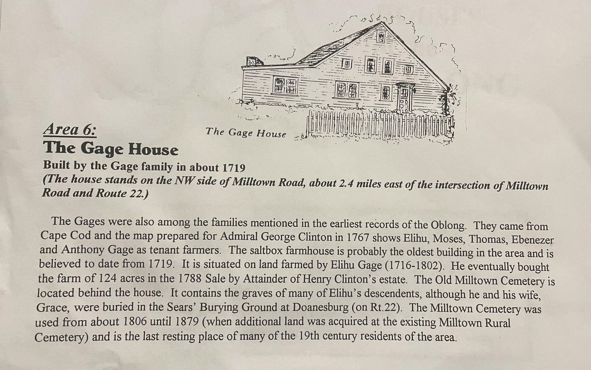
The house is a saltbox-form farmhouse — one of the most distinctive forms of 18th-century New England domestic architecture. Its steeply pitched roof extending low over a rear lean-to addition is consistent with construction in the first decades of the 18th century and connects the house architecturally to the Cape Cod origins of the Gage family.
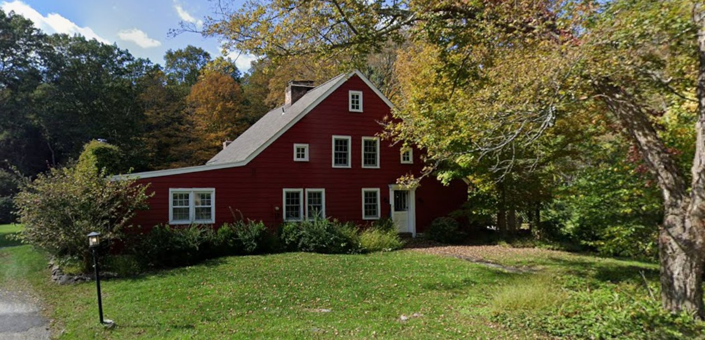
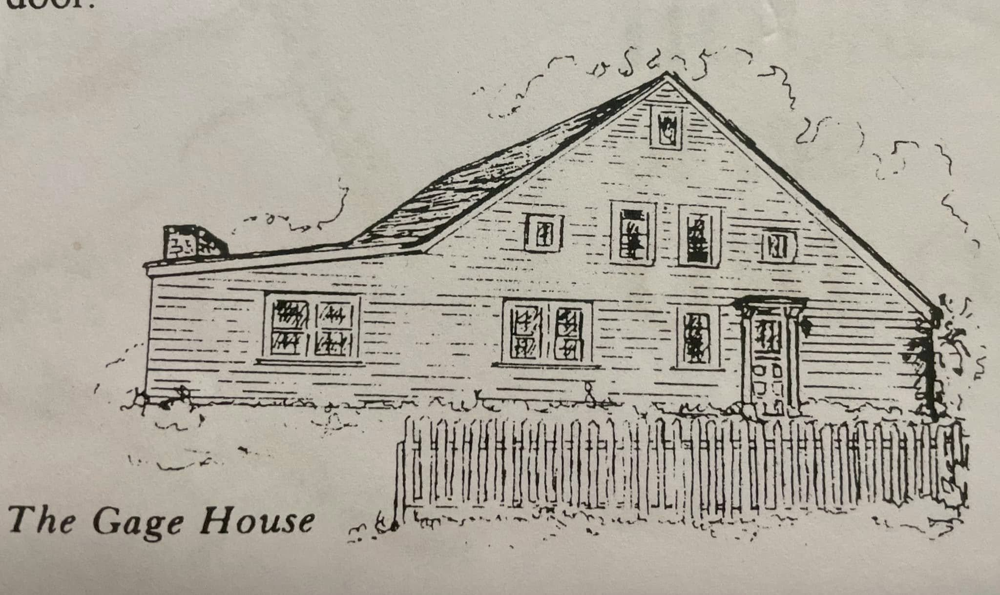
II. The Gage Family
Origins
The Gages came from Cape Cod, Massachusetts. Thomas Gage (1700–1790) and his wife Rebeckah Thankful Rider (1706–1759) were married on October 13, 1726 in Yarmouth, Barnstable County, Massachusetts. The family removed to Southeast, Dutchess County, New York sometime between 1741 and 1758, per Clyde V. Gage’s compiled genealogy Thomas Gage of Yarmouth, Mass. and His Descendants (c. 1943).
Thomas and Rebeckah had at least seven sons, six of whom are directly relevant to this property’s history: Elihu (1727), Anthony (1729), Moses (1732), Ebenezer (1734), George (1740), and Mark (born after the family’s removal to Southeast). By 1767 a map prepared for the Clinton estate shows five of these brothers — Elihu, Moses, Thomas, Ebenezer, and Anthony — as tenant farmers on the land. They had been working this land as tenants for decades before they owned it.
Elihu Gage (February 27, 1727 – August 14, 1802)
Elihu Gage was born on February 27, 1727 in Yarmouth, Barnstable County, Massachusetts, the eldest son of Thomas Gage and Rebeckah Rider. He married Grace Pickett (1736–1814) around 1758 in Southeast, Dutchess County. He farmed the land that would become the Gage House property for decades as a tenant before purchasing it outright in 1783, and died on the farm on August 14, 1802 at the age of 75.
Source note: The 1997 tour guide gives Elihu’s birth year as “1716” and states he was “farming from 1716.” Primary and genealogical sources — the Gage genealogy, Find A Grave, and FamilySearch — consistently give 1727. The Historical and Genealogical Record of Dutchess and Putnam Counties (1912) states he “died in 1802, aged 78 years,” which is consistent with 1727. The tour guide’s “1716” appears to be erroneous.
Elihu served in the American Revolution as a private in Col. William Humphrey’s 4th Regiment and Col. John Field’s 3rd Regiment, Dutchess County Militia. He was, in other words, a Patriot soldier farming land owned by the British Commander-in-Chief — and at war’s end, he purchased that same land from the new American government at an attainder sale.
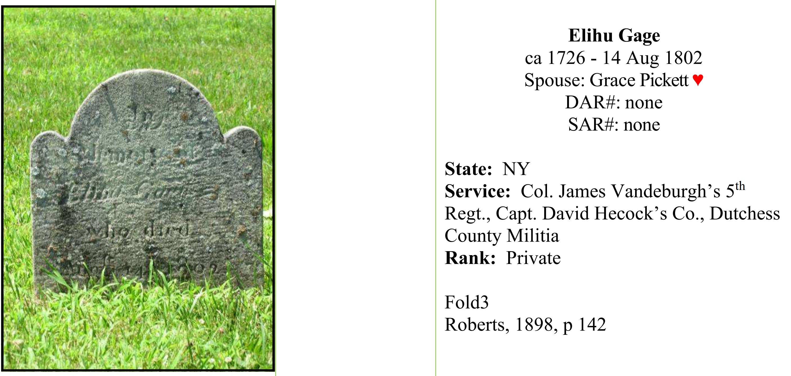
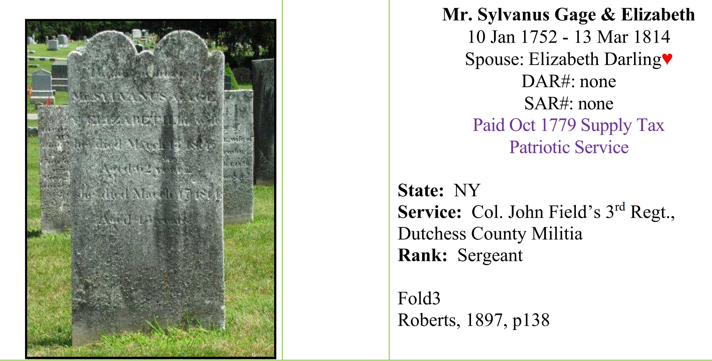
Elihu’s Children and the Inheritance
Elihu and Grace Pickett had six children: Thomas, Sarah (married Young), Elihu Jr. (1774–1834), Selah (1775–1846), Grace (married Abijah Knapp), and Ephraim (1780–1860). In his will dated June 7, 1802, Elihu left the residue of his real and personal estate — including the farm — to three sons in equal thirds: Elihu Jr., Selah, and Ephraim. Thomas received a $20 cash bequest, and daughters Sarah Young and Grace Knapp each received modest cash sums, suggesting they had already received their shares during Elihu’s lifetime.
Ephraim, one of the two executors named in the will, died in Danbury, Connecticut in 1860. Selah’s son Selah Jr. (1818–1863) died in Ridgefield, Connecticut. These two Connecticut connections — Ephraim in Danbury and Selah’s branch in Ridgefield — almost certainly explain why the 1878 sale was executed by 17 Connecticut-based heirs. The farm passed by inheritance through Elihu’s three sons and their descendants, without any deed ever recorded, until the Connecticut heirs finally sold in 1878.
Sylvanus Gage — Neighbor and Witness, Not Heir
Elihu’s 1783 deed explicitly references “Sylvanus Gages South West Corner” and “a heap of stones the South Side of the road near to the said Sylvanus Gages house” as boundary monuments. For years this raised the question of who Sylvanus was and whether he was part of the inheritance chain.
The Gage genealogy resolves this: Sylvanus Gage (1/10/1752–3/13/1814) was the son of Anthony Gage — Elihu’s brother, not Elihu’s son. He was Elihu’s nephew. He married Elizabeth Darling and had children including Alden S., Samuel D., and others. He served in the Revolution as a Sergeant in Col. John Field’s 3rd Regiment. His appearance in Elihu’s 1802 will is as a witness, not an heir — consistent with a trusted family member of a different branch. He died in 1814, just two years after Putnam County was formed, which is why he never appears in the post-1812 Putnam County deed indexes.
III. The Attainder Sale of 1783
The Gage family’s transition from tenants to owners was a direct consequence of the American Revolution. Sir Henry Clinton, the British Commander-in-Chief in North America, owned the land the Gages farmed. New York State seized and sold the estates of Loyalists under the Act for the Forfeiture of Estates (1779). A board of Commissioners of Forfeiture — led by Samuel Dodge and others — conducted the sales.
On October 30 – November 24, 1783, in a series of transactions, four Gage brothers purchased their respective parcels from the Commissioners. All five deeds have been physically reviewed from Dutchess County records:
Elihu Gage — 125½ acres (two parcels: 53¾ + 71¾), £94.2.6, October 30, 1783 (DC Liber 8/425)
Mark Gage — 79 acres, £27.13.0, October 30, 1783 (DC Liber 8/423)
Ebenezer Gage — 32¾ acres, £8.3.9, October 31, 1783 (DC Liber 8/426)
Anthony Gage — 112¾ acres (including lands occupied by Sylvanus Gage, his son), £45.2.0, November 24, 1783 (DC Liber 8/442)
Together the Gage brothers acquired approximately 350 acres in six weeks — land they and their father had been farming for decades. The total purchase price was approximately £175, paid to the new American state.
The deeds are notable for their cross-references: Mark’s deed begins “at Elihu Gages South East corner”; Anthony’s deed references “Elihu Gages line” twice; the William Clinton deed in the same series references both “Elihu Gages Southerly Corner” and “Elihu Gages North West corner.” Elihu’s parcel is the geographic center of the family’s collective holding.
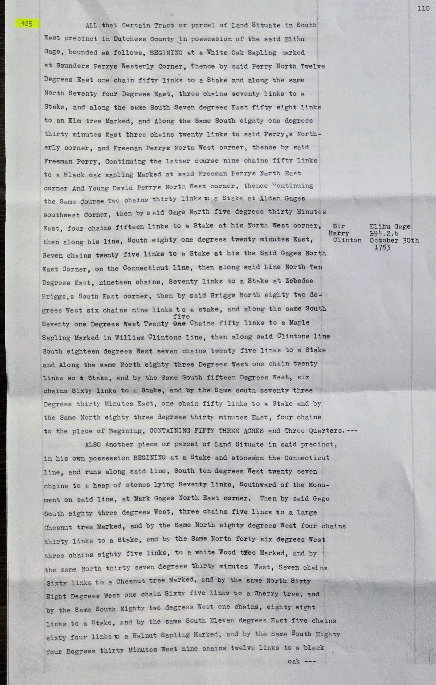
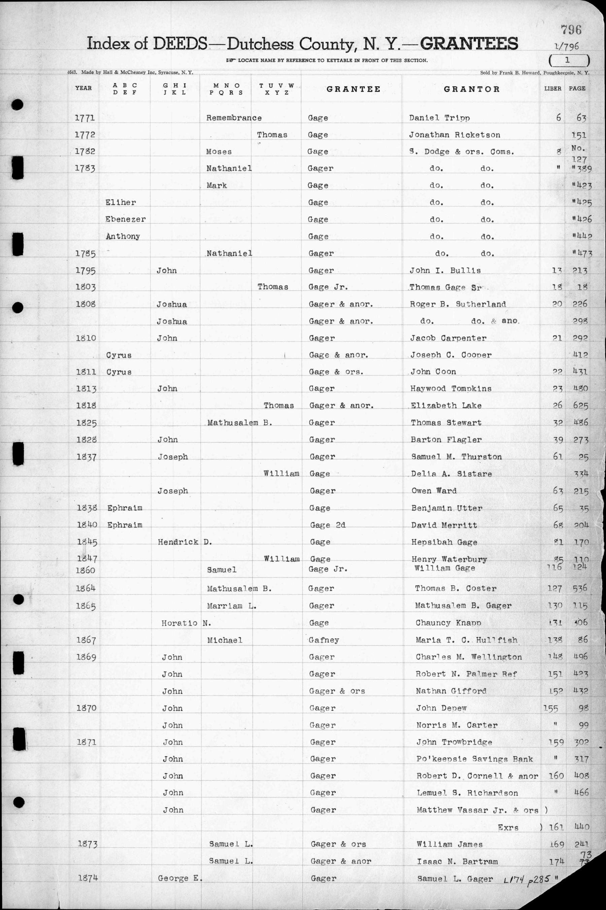
IV. Elihu’s Will and the Inheritance Gap
Elihu Gage wrote his will on June 7, 1802 at his residence in Southeast. It was proved before Gilbert Livingston, Surrogate of Dutchess County, on October 28, 1802. The original will was delivered to executor Ephraim Gage on May 26, 1803.
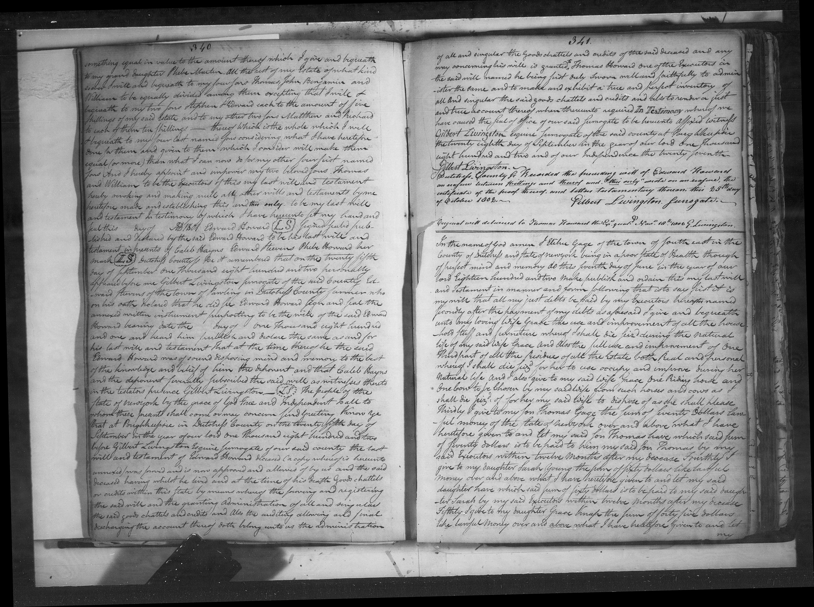
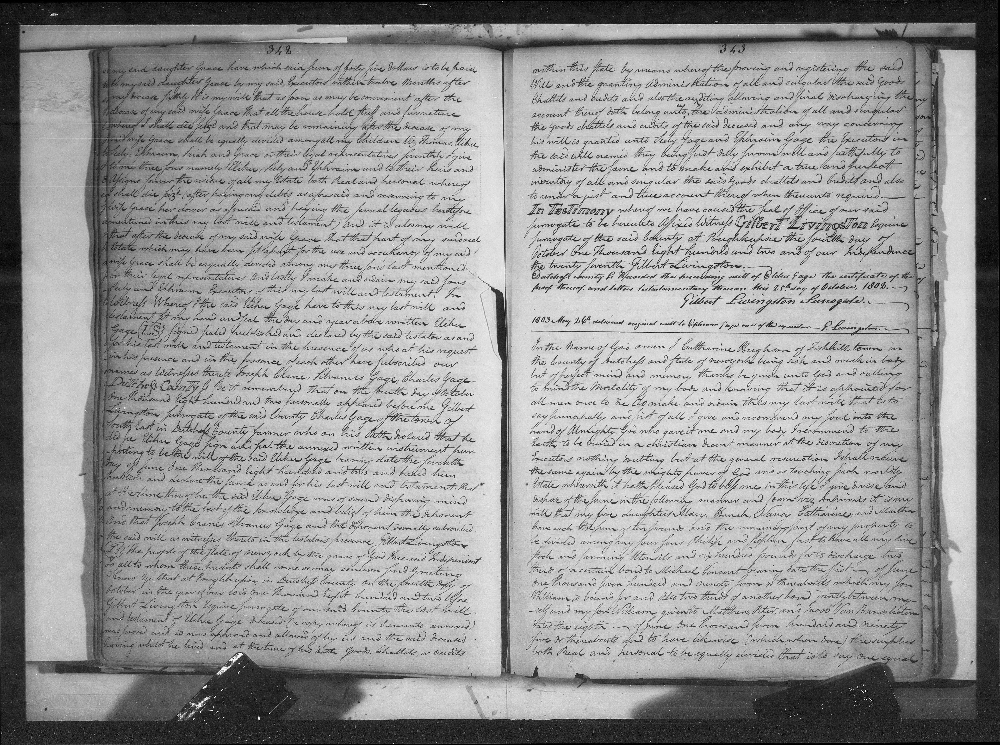
The will’s key provisions:
Wife Grace — life use of all household goods and furniture, plus one riding horse and one cow, plus one-third of all real and personal estate during her natural life
Son Thomas — $20 cash (above any prior gifts)
Daughter Sarah Young — $50 cash
Daughter Grace Knapp — $45 cash
Residue — to sons Elihu Jr., Selah, and Ephraim in equal thirds
Executors: sons Selah and Ephraim
Witnesses: Joseph Crane, Sylvanus Gage, Charles Gage
Grace Pickett Gage survived her husband by twelve years, dying on February 24, 1814.
The 1822 Quit Claim: Selah to Ephraim
On April 1, 1822, Selah Gage and his wife Esther executed a quit claim deed conveying three parcels of land in Southeast totaling 51 acres to his brother Ephraim Gage for $1,000. This is the critical instrument that begins to close the inheritance gap. Selah was conveying his one-third inherited share of the Elihu Gage farm to Ephraim — one brother buying out another’s share twenty years after their father’s death.
The deed was signed April 1, 1822, acknowledged April 3, 1822 before Commissioner Elijah Barnum, but not recorded until October 22, 1845 — twenty-three years after execution. The late recording almost certainly reflects Selah’s death in January 1846; the deed was recorded to clear title just before or just after his death.
The boundary descriptions are rich with family history. The first parcel begins at the colony line “near where Reuben Solomons old house formerly stood” and runs along “the lands of Elihu Gage” — the father’s land still anchoring the boundaries two decades after his death. The second parcel runs along “lands formerly of Mark Gage dec.” The third parcel references “the lands of Mark and Sylvanus Gage dec.” — confirming both Mark and Sylvanus were deceased by 1822. The witnesses are William Holmes and Elihu Gage — Elihu Jr. himself witnessing his brothers’ transaction.
After this deed, Ephraim held at minimum two-thirds of the inherited farm. He died in Danbury, Connecticut on December 11, 1860. His share — along with whatever portion of Elihu Jr.’s third eventually reached him or his heirs — passed to the Connecticut heir group who sold to Peter Foster in 1878.
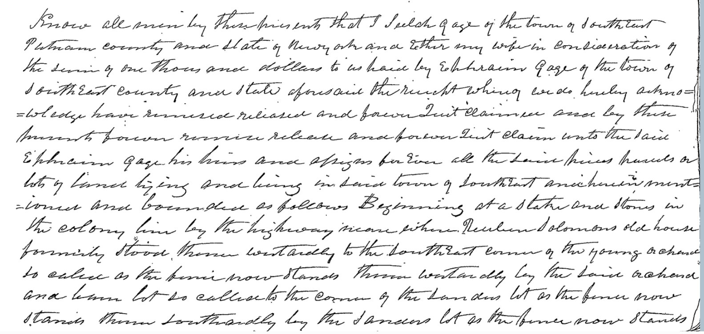
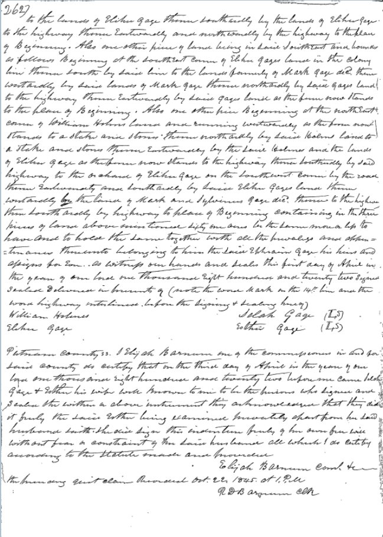
Ephraim’s Branch: Consolidated Two-Thirds
In 1822 Selah Gage and his wife Esther executed the quit claim above, conveying three parcels totaling 51 acres to brother Ephraim for $1,000 — Selah’s inherited one-third passing to Ephraim. After this Ephraim held at minimum two-thirds of the farm. He died in Danbury, Connecticut on December 11, 1860, and his consolidated holding passed to his Connecticut heirs — the group who sold to Peter Foster in 1878.
Pelletreau’s 1886 History of Putnam County independently confirms this connection in plain narrative terms, stating that Elihu Gage “took a farm on the Oblong, at the place where Peter Foster now lives” — directly tying the Gage settler’s farm to the documented 1878 Foster conveyance.
Elihu Jr.’s Branch: The Roswell Consolidation
Elihu Jr. (1774–1834) held the remaining one-third of the farm. After his death his estate was divided among his children, who systematically sold their fractional shares to their brother Roswell Gage between 1830 and 1832:
- November 6, 1830: Harvey Gage & Densy his wife → Roswell Gage; $67.50; explicitly one-eighth share of ~60 acres “being the property of Elihu Gage late of Southeast deceased” (PC G/100)
- January 14, 1832: Coles Gage → Roswell Gage; $60; ~60 acres of “the estate of Elihu Gage late of Southeast deceased” (PC G/382)
- February 16, 1832: Elias P. Gage & Mary his wife → Roswell Gage; $28; ~38 acres of “the farm of land lately owned and of which Elihu Gage died seized”; bounded north by Roswell, south and east by Ephraim Gage (PC G/493)
Three siblings sold their shares to Roswell within sixteen months of each other. All three deeds use identical language referencing Elihu Gage as the title source. The boundaries in Elias’s deed show Ephraim’s large consolidated holding bordering on two sides — the two branches sitting adjacent. Roswell’s subsequent disposition of this consolidated parcel has not been documented by recorded deed; his heirs most likely joined the 1878 Connecticut heir group.
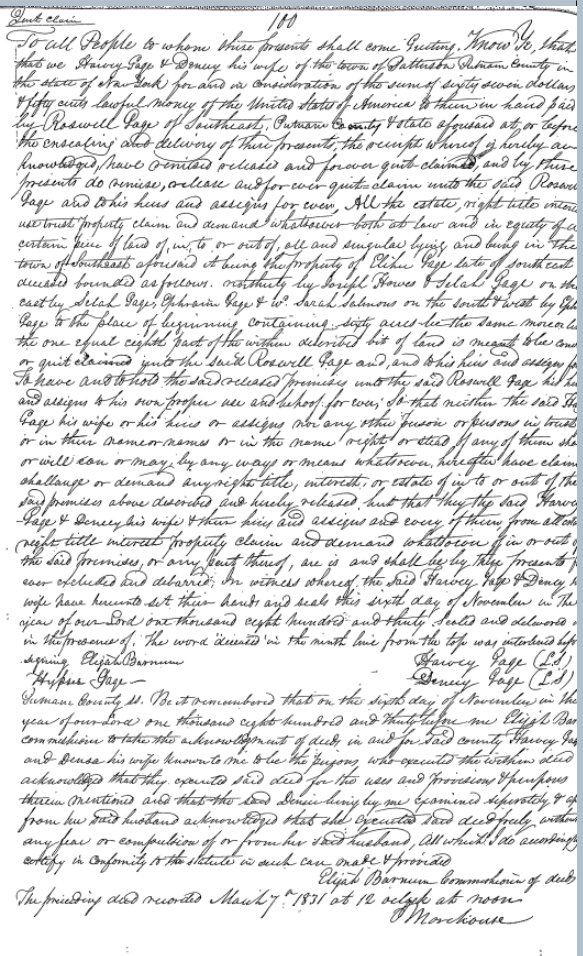
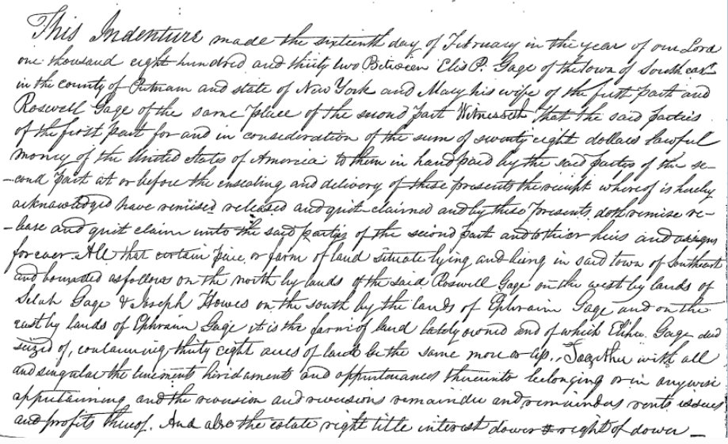
Selah’s Branch: Estate Settlement (1849)
Selah Sr. died January 16, 1846. His estate was settled among his children in 1849 through two simultaneous quit claims on the same day — June 7, 1849. Esther (widow), Selah Jr., and Lorany quit claimed 40 acres to Levi (PC V/388); Levi and Emily then quit claimed 61 acres to Thomas (of Racine, Wisconsin) and Selah Jr. (of Southeast) the same day (PC W/320), including Levi’s right in his mother Esther’s dower. This branch’s land, bounded on the east by the Connecticut state line and the south by Ephraim Gage, was adjacent to but separate from the house parcel.
The Full Timeline
1802 — Elihu’s will divides farm to Elihu Jr., Selah, and Ephraim in equal thirds
1822 — Selah quit claims his third to Ephraim — Ephraim now holds two-thirds
1830–1832 — Elihu Jr.’s children (Harvey, Coles, Elias) sell their fractional shares to Roswell
1846 — Selah Sr. dies; his estate settled among children in 1849
1860 — Ephraim dies in Danbury CT; his two-thirds passes to Connecticut heirs
1878 — 17 Connecticut grantors sell collectively to Peter Foster for $1,500
Source note: The Putnam County Land Trust website states that “the oldest grave [in the burial ground behind the house] belongs to Selah Gage, Elihu’s grandson.” The primary evidence — the 1802 will and the Gage genealogy — confirms Selah (1775–1846) as Elihu’s son, not grandson. The Land Trust’s description appears to be an error.
V. The Putnam County Chain of Title (1878 to Present)
From 1878 forward, the chain of title is complete and unbroken. Every instrument has been physically reviewed from the Putnam County Clerk’s Office.
Peter Foster (1878–1920)
On June 24, 1878, Aaron Pearce of Danbury and sixteen other Connecticut residents — all heirs of the Gage family estate — sold the farm to Peter Foster for $1,500. The deed (recorded August 5, 1879) conveys the farm “with the buildings thereon,” explicitly confirming the house’s continued existence. Peter Foster held the property until his death, after which his widow Mary E. Foster conveyed it to Grace Leigh Duncan in 1920.
The Duncan–Macgowan Division
Grace Leigh Duncan, of Pleasantville, Westchester County, conveyed the property in two separate instruments: Parcel I to Edna Behre Macgowan in June 1923, and Parcel II in October 1927. A boundary line agreement (Liber 142/258) established the formal Parcel I/II division, surveyed by Tuthill. Duncan retained approximately 12.5 acres at the time of the first conveyance; the ultimate disposition of her retained parcel has not been traced.
The Ross Carve-Out and the Preserve
In 1954, Kenneth and Edna Macgowan conveyed 0.993 acres to Dr. Henry Ross and Glenda Farrell Ross. Dr. Ross was a West Point and Harvard Medical School graduate who served on General Eisenhower’s staff during World War II and was among the first medical officers to enter the Nazi concentration camps at the war’s end. Glenda Farrell was a film actress who appeared in over 100 films between 1928 and 1968, including Little Caesar and the Torchy Blane series; she has a star on the Hollywood Walk of Fame. She died of lung cancer in 1971. In 1977 Dr. Ross donated the preserve to the Putnam County Land Trust in her memory. He died in 1991.
The Glenda Farrell–Henry Ross Preserve now encompasses approximately 36 acres along Milltown Road, immediately north of the Gage House lot (Lot 13). The preserve’s history page notes that “this preserve was part of the Gage family farm” — the deed chain confirms this directly.
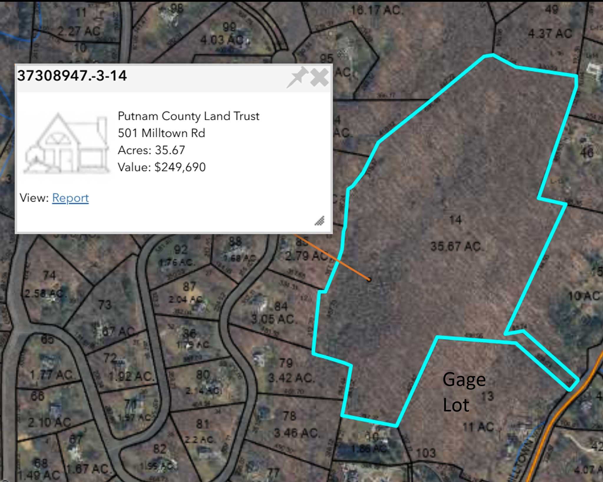
Kennedy to Present
Rodman and Carolyn Clark acquired the property from the Macgowans in 1956. In 1966 the deed from Carolyn Wiedemann (Clark) to Allan and Grethe Kennedy still described the road as “Gage Street” — confirming the Gage name persisted on the local road nearly two centuries after the family’s ownership. The Kennedys held the property until 2005, when they conveyed it to the current owners, Robert Diotte and Renée Fischer.
VI. Complete Chain of Title
PC = Putnam County Clerk’s Office. DC = Dutchess County Clerk’s Office. All Putnam County deeds have been physically reviewed. Dutchess County deed images at DC 8/423, 425, 426, and 442 have been reviewed and transcribed.
| Date | Grantor → Grantee | Liber/Page | Notes |
|---|---|---|---|
| Oct. 30, 1783 | Sir Harry Clinton (Commissioners of Forfeiture) → Elihu Gage | DC 8/425 | 53¾ + 71¾ acres = 125½; £94.2.6. |
| Oct. 30, 1783 | Henry Clinton (Commissioners) → Mark Gage | DC 8/423 | 79 acres; begins at Elihu Gage’s SE corner. |
| Oct. 31, 1783 | Henry Clinton (Commissioners) → Ebenezer Gage | DC 8/426 | 32¾ acres; £8.3.9. |
| Nov. 24, 1783 | Henry Clinton (Commissioners) → Anthony Gage | DC 8/442 | 112¾ acres (incl. lands of Sylvanus, Anthony’s son). |
| Jun. 7, 1802 | Elihu Gage (will) → Elihu Jr., Selah & Ephraim Gage | DC Probate | Farm to three sons in equal thirds; will proved Oct. 28, 1802. |
| Apr. 1, 1822 rec. Oct. 22, 1845 | Selah Gage & Esther → Ephraim Gage | PC S/261 | Quit claim; $1,000; 51 acres in three parcels. |
| Nov. 6, 1830 | Harvey Gage & Densy (Patterson) → Roswell Gage | PC G/100 | Quit claim; $67.50; 1/8 share of ~60 acres “property of Elihu Gage… deceased.” |
| Jan. 14, 1832 | Coles Gage → Roswell Gage | PC G/382 | Quit claim; $60; ~60 acres. |
| Feb. 16, 1832 | Elias P. Gage & Mary → Roswell Gage | PC G/493 | Quit claim; $28; ~38 acres; bounded by Roswell & Ephraim Gage. |
| Jun. 7, 1849 | Esther Gage, Selah Jr. & Lorany → Levi Gage (Green Co. NY) | PC V/388 | Quit claim; $100; 40 acres; settles Selah Sr.’s estate. |
| Jun. 7, 1849 | Levi Gage & Emily → Thomas Gage (Racine, WI) & Selah Gage | PC W/320 | Quit claim; $100; 61 acres; east by CT state line. |
| by 1860 | Ephraim Gage (d. Danbury CT) → his CT heirs | [none rec.] | By inheritance, no recorded deed. |
| Jun. 24, 1878 | Aaron Pearce + 16 CT heirs → Peter Foster | PC 57/243 | $1,500; 17 grantors all CT residents; ~19 + 1.5 acres. |
| Apr. 27, 1920 | Mary E. Foster (widow) → Grace Leigh Duncan | PC 118/14 | ~19 + 1.5 acres. |
| Jun. 8, 1923 | Grace Leigh Duncan → Edna Behre Macgowan | PC 126/32 | Parcel I. |
| Oct. 10, 1927 | Grace Leigh Duncan → Edna Behre Macgowan | PC 142/258 | Parcel II; Tuthill survey. |
| May 13, 1954 | Kenneth & Edna Macgowan → Henry & Glenda F. Ross | PC 444/413 | 0.993 acres; now Glenda Farrell–Henry Ross Preserve (donated 1977). |
| Apr. 16, 1956 | Kenneth & Edna Macgowan → Rodman & Carolyn Clark | PC 474/181 | Ross parcel excepted. |
| Jan. 13, 1966 | Carolyn C. Wiedemann (Clark) → Allan & Grethe Kennedy | PC 623/204 | Road described as “Gage Street.” |
| Jun. 20, 2005 | Allan & Grethe Kennedy → Robert Diotte & Renée Fischer | PC 1708/333 | Current owners. |
VII. An Open Question: Which Clinton?
The 1997 tour guide attributes the 1767 tenant map to “Admiral George Clinton.” The primary deed evidence names the grantor in the 1783 attainder sales as “Sir Harry Clinton” — Sir Henry Clinton, the British Commander-in-Chief, whose estates were subject to forfeiture under the 1779 Act.
Admiral Sir George Clinton (1686–1761) died six years before the map would have been prepared. Revolutionary War Governor George Clinton was an American patriot whose land would not have been subject to attainder. The deed record points consistently to Sir Henry Clinton. The tour guide’s “Admiral George Clinton” attribution appears to be an error — most likely a conflation of Clinton family members.
This question is flagged as unresolved, not a settled conclusion. Confirming the correct Clinton requires locating the 1767 map itself. Likely repositories: New York State Archives (Albany), New-York Historical Society, or Dutchess County Historical Society.
- Roswell Gage’s consolidated holding — he acquired Harvey’s, Coles’s, and Elias’s shares of Elihu Jr.’s estate by 1832; his subsequent disposition has not been documented by recorded deed. Confirming how his holding reached the 1878 Connecticut heir group would close the Elihu Jr. branch of the inheritance.
- Metes-and-bounds georeferencing — plotting Elihu’s 1783 deed boundary against modern GIS maps to confirm the house parcel falls within the described 125½-acre holding.
- The 1767 Clinton tenant map — identify the correct Clinton (Sir Henry, not “Admiral George” as stated in the tour guide). Likely held by NYSA, N-YHS, or Dutchess County Historical Society.
- Grace Leigh Duncan’s retained ~12.5 acres — disposition after the 1923 Parcel I conveyance not yet traced.
- Acreage of Parcel II — never stated in any deed; calculated at ~5.5 acres by subtraction from the confirmed 11-acre GIS total.
Sources Consulted
- DC 8/425 — Commissioners of Forfeiture to Elihu Gage, Oct. 30, 1783. Two parcels totaling 125½ acres; £94.2.6. Root deed for the Gage House farm.
- DC 8/423 — Commissioners of Forfeiture to Mark Gage, Oct. 30, 1783. 79 acres; £27.13.0.
- DC 8/426 — Commissioners of Forfeiture to Ebenezer Gage, Oct. 31, 1783. 32¾ acres; £8.3.9.
- DC 8/442 — Commissioners of Forfeiture to Anthony Gage, Nov. 24, 1783. 112¾ acres; £45.2.0.
- Will of Elihu Gage, dated June 7, 1802; proved Oct. 28, 1802 before Gilbert Livingston, Surrogate of Dutchess County. Dutchess County Surrogate’s Court will book, pages 341–342. Witnesses Joseph Crane, Sylvanus Gage, Charles Gage.
- PC S/261 — Selah Gage & Esther to Ephraim Gage, Apr. 1, 1822 (rec. Oct. 22, 1845). Quit claim; $1,000; 51 acres.
- PC G/100 — Harvey Gage & Densy to Roswell Gage, Nov. 6, 1830. Quit claim; $67.50; 1/8 share of ~60 acres.
- PC G/382 — Coles Gage to Roswell Gage, Jan. 14, 1832. Quit claim; $60; ~60 acres.
- PC G/493 — Elias P. Gage & Mary to Roswell Gage, Feb. 16, 1832. Quit claim; $28; ~38 acres.
- PC V/388 — Esther, Selah Jr. & Lorany to Levi Gage, Jun. 7, 1849. Quit claim; $100; 40 acres.
- PC W/320 — Levi & Emily to Thomas & Selah Gage, Jun. 7, 1849. Quit claim; $100; 61 acres.
- PC 57/243 — Aaron Pearce + 16 others to Peter Foster, Jun. 24, 1878. $1,500; ~19 + 1.5 acres.
- PC 118/14 — Mary E. Foster to Grace Leigh Duncan, Apr. 27, 1920.
- PC 126/32 — Duncan to Macgowan, Parcel I, Jun. 8, 1923.
- PC 142/258 — Duncan to Macgowan, Parcel II, Oct. 10, 1927.
- PC 444/413 — Macgowan to Ross, May 13, 1954.
- PC 474/181 — Macgowan to Clark, Apr. 16, 1956.
- PC 623/204 — Wiedemann (Clark) to Kennedy, Jan. 13, 1966.
- PC 1708/333 — Kennedy to Diotte & Fischer, Jun. 20, 2005.
- The Milltown Association. Houses of the Oblong. 1997 Fall Tour Guide. Primary secondary source for the Gage House; gives 1719 construction date. (Erroneous on Elihu’s birth year, purchase date, and Clinton attribution — corrected throughout this narrative.)
- Pelletreau, William S. History of Putnam County, New York. Philadelphia: W. W. Preston & Co., 1886. States Elihu Gage “took a farm on the Oblong, at the place where Peter Foster now lives.”
- Gage, Clyde V. Thomas Gage of Yarmouth, Mass. and His Descendants. Compiled c. 1943. Digitized by Internet Archive.
- Historical and Genealogical Record of Dutchess and Putnam Counties, New York. A. V. Haight Co., 1912 (Chapter XII). States Elihu “died in 1802, aged 78 years.”
- Find A Grave, Memorial ID 16829607. Elihu Gage (27 Feb 1727 – 14 Aug 1802). Old Southeast Church Cemetery, Brewster Hill.
- Putnam County Land Trust. “Glenda Farrell–Henry Ross Preserve.”
- Dutchess County Deed Indexes — Grantees and Grantors. Reviewed for Gage family entries, 1771–1874.
- Putnam County Deed Indexes — Grantees and Grantors. Reviewed exhaustively for Gage, Pearce, Horton, and related names, 1812–1878.
Research by Rob G. · May 2026 · A Property History